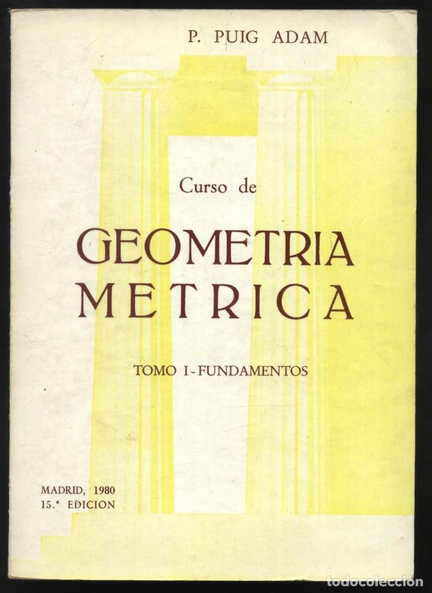
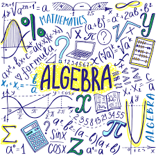

Pincha el tema que requieras aprender
 
GEOMETRÍA MÉTRICA:
- Ángulos en el espacio
- Proyecciones ortogonales
- Puntos simétricos
- Distancias en el espacio
- Ejercicios de práctica
ÁLGEBRA:
- Teoría de exponentes
- Ecuaciones exponenciales
- Polinomios
- Valor numérico
- Factorización
- Divisibilidad
- Radicación
- Racionalización
- Ecuaciones primer grado
- Ecuaciones segundo grado
- Desigualdad e inecuaciones
- Valor absoluto
- Matrices
- Funciones
- Logaritmos
CÁLCULO:
- Números naturales, reales, enteros y racionales
- Funciones, sucesiones, límites y continuidad
- Derivadas
- Series de Taylor y límites indeterminados
- Integración
- Funciones de variable compleja
MÁTEMÁTICA APLICADA INGENIERÍA:
-
-
-
-
-
-
FUNDAMENTOS DE MATEMÁTICA:
-
-
-
-
-
-
Encuentra el tema que estas buscando...
Si NO lo encuentras pedilo por email para ayudarte!

codeam2021@outlook.com